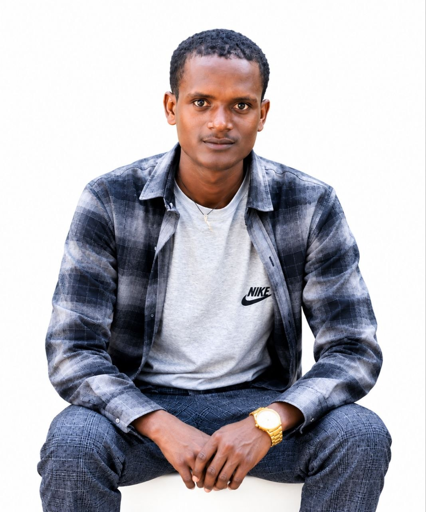

Full-Stack Developer | AI-Driven Solutions
I’m a passionate Full-Stack Developer and Information Systems student at the University of Gondar, focused on building intelligent, scalable applications that solve real-world problems. With hands-on experience across React, Node.js, React Native, Python, MongoDB, and PostgreSQL, I’ve developed more than six projects spanning web and mobile applications and AI-driven solutions.
My expertise is backed by international online certifications and university training in Artificial Intelligence, Data Analysis, Cybersecurity, and Software Development. I turn complex challenges into practical digital solutions through clean code, creative problem-solving, and continuous learning.
Core competencies
Full‑Stack Engineering
React, Node.js, Python (Django/Flask), RESTful APIs, database design (SQL/NoSQL), and performance optimization.
AI‑Integrated Systems
LLM integration, recommendation engines, scikit-learn, TensorFlow basics, and intelligent feature development.
Systems & Network Security
Firewall configuration, intrusion detection, VPNs, access control, encryption fundamentals, secure architecture.
Journey & credentials
B.Sc. Information Systems
University of Gondar · 2027 (expected)
Startup Competition Winner
E-Tour Ethiopia · 2025
Network Security Certified
Udacity / UoG trainings
I architect systems that are not only smart but also secure, scalable, and context‑aware. My goal is to lead the African digital transformation by building infrastructure that empowers communities.
Let's Build Something Meaningful
I'm open to exciting opportunities, collaborations, and innovative projects where technology can make a real difference. If you're looking for a developer who combines full-stack engineering with AI-driven problem-solving, let's connect and turn your ideas into reality.